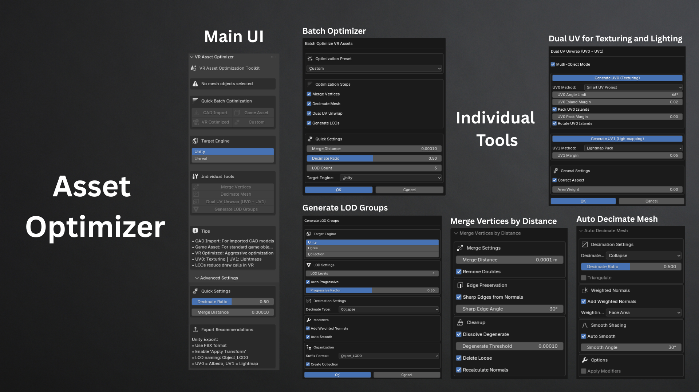

Game Asset Optimizer
RoleDeveloper & Author
TechBlender 4.2+, Python API, Mesh Optimization



Description
Complete optimization toolkit for game engines featuring mesh decimation, LOD generation, dual UV unwrapping, and batch optimization presets. Automates LOD generation, handles dual UV systems (texture + lightmap), and includes smart decimation algorithms with quality preservation for game developers, VR creators, and CAD workflows.
Outcome
Reduced asset prep time by 40-60% for Unity/Unreal pipelines with 1,149+ downloads and 5.0 rating on Blender Extensions. Streamlined CAD-to-game-engine workflows with automated cleanup and adopted by game developers and VR creators for production pipelines.